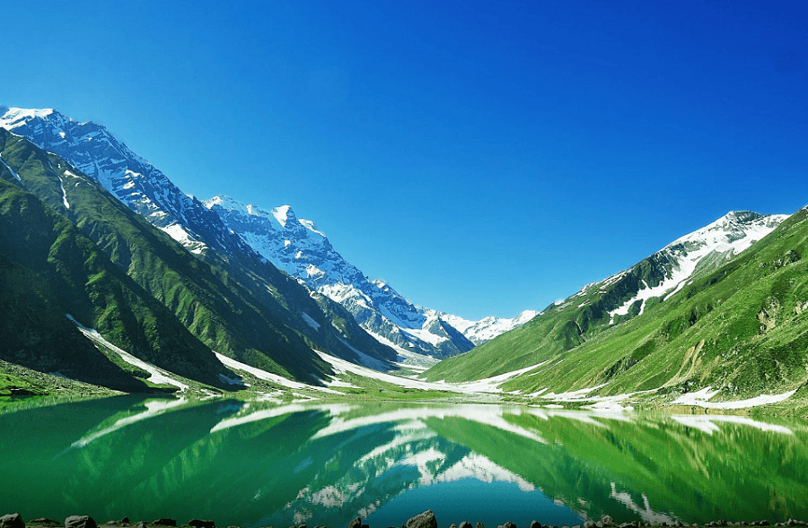
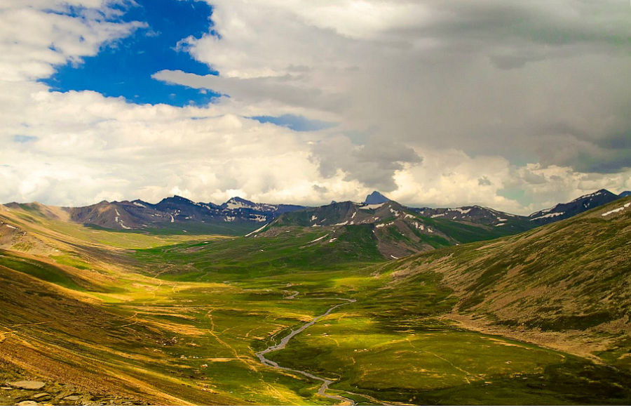
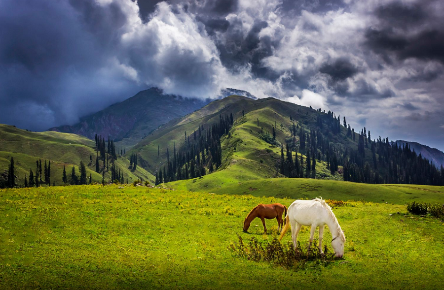

- Saiful Malook Lake 
- babusar-top 
- Ansoo Lake (Tear Lake)
- Siri Paye 
Beautiful tourist places of Naran
Alpine glaciers lake is located about 7 Kilometers from Naran Bazaar and is 10,000 ft from sea level. Famous
story
of Prince of Persia associated with Saif ul Malook Lake and local guide used to tell fairy tales.
70 Kilometers from Naran a mountain pass at the north connecting Thak Nala with Chilas is also a famous
destination while on your tour to Naran Kaghan Valley.

Anso Lake is another lake at some distance from Lake Saif ul Mulook because it is shaped like a tear. This
lake is
situated at an altitude of 13,928 feet above sea level. Ansoo Jheel (Lake) is considered to be the
highest lake in the
Himalayan mountain range. The journey from Saif al-Muluk to Lake Anso is 10 km which you
have to complete
with a walk, which can take up to 4-5 hours. That's why, we would suggest that if you want
to go to Lake Ansu,
you can start your journey from Naran to Saif Al-Muluk Lake in the morning.
Siri Paye is green carpeted land, covered under clouds and mesmerizing scenery of snowy mountains. On your
tour to Shogran, must visit Siri Paye Meadows and Siri Lake. Road condition from Shogran to Siri Paye is not
too good but this place is worth seeing.